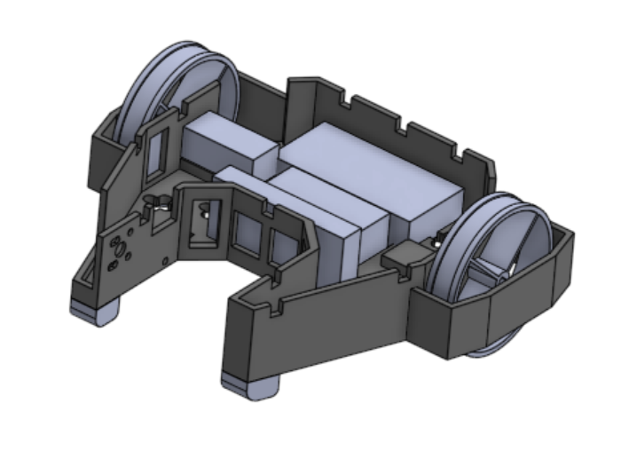
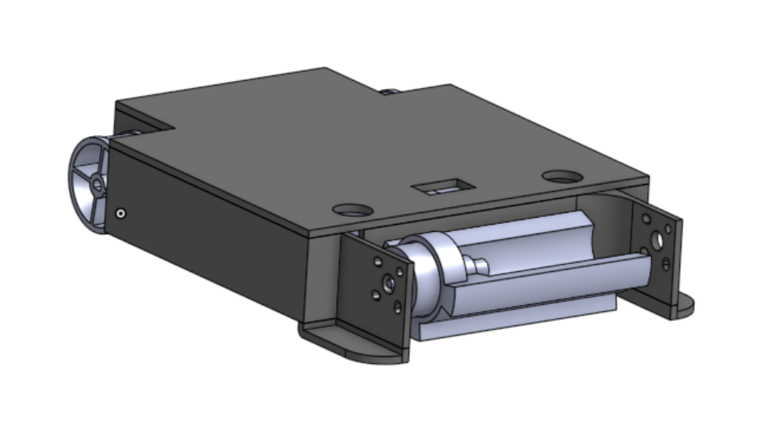

Overview
I completed the mechanical CAD and packaging for a 150 g vertical-spinner robot in SolidWorks, integrating a hand-fabricated aluminum weapon with a 3D-printed chassis.
The team moved from concept to competition-ready hardware in two weeks. Of more than 20 teams entered, we were one of 7 to field an operational robot.

Evolution
The design evolved through rapid CAD and physical iterations as we resolved the chassis envelope, weapon support, mass budget, and electronics packaging.

The Weapon
The vertical spinner was cut from aluminum, drilled at its center, and filed into a saw profile. It was quick to fabricate, but its thin section deformed and carried too little rotational inertia for strong energy transfer.
Before final assembly, we validated the brushed drive and brushless weapon controllers with Arduino signal testing. Bench impact tests then confirmed reliable weapon spin-up.

In Action
First movement test
What I Learned
- Budget mass, electronics space, and weapon geometry together from the first CAD layout
- Validate motor-control subsystems independently before committing to final assembly
- Design for recovery: an emergency chassis retrofit kept the robot operational on competition day
Rage: the next competition design
DreadBot's large wheels enabled inverted driving, but raised the chassis and made impacts more destabilizing. The weapon deformed, rushed wiring contributed to weapon-motor failure, and the robot lost its bearings after being flipped.


Rage deliberately sacrifices invertibility for survival. It lowers and encloses the chassis, protects the wheels, and replaces the thin saw with a wider, higher-inertia impact weapon. The CAD is complete; fabrication and validation are planned for the next competition cycle.